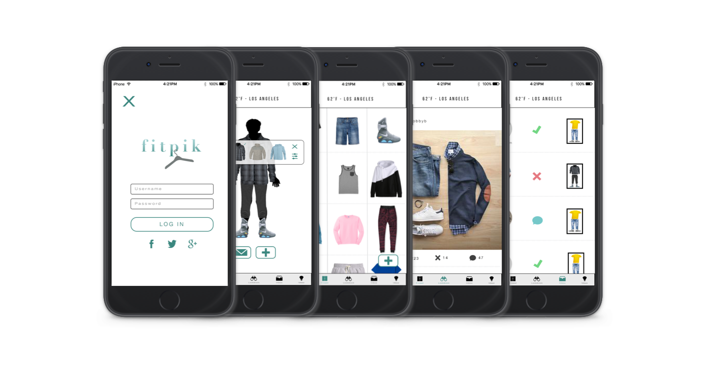

FitPik
Pick outfits within seconds

Overview
One of the most dreaded, time-consuming parts of our days are picking out an outfit to wear for the day. FitPik is an app which allows users to quickly add clothes to the app by taking photos of the clothes in their closet and then using the app to mix and match outfits. The app also includes a lookbook which shows popular outfits posted, a feature to send outfits to your friends so that they can vote or comment on them, and suggested outfits based on the clothes in your closet.
Tools Used
Gliffy, Xtensio, Adobe Illustrator, Balsamiq, InVision
The Process
Research & Competitor Analysis
Before starting on this app idea, I did some competitor analysis to find any apps that have similar features as mine. Fortunately, I didn't find any. I proceeded to engage in a few user interviews to get a better idea of the audience I was designing for. I then pulled out some post-its and a marker to begin brainstorming features that I might include on the first iteration of design for the FitPik app.
Personas
Before beginning any designing, it's essential to know who you're designing for. As I mentioned previously, I interview a few users to get a better idea of my audience and then proceeded to create a few personas that portray the audience. The average age of the user would be young with an age range of 13 to 30 years old with a low disposable income.
User Flows
With better knowledge of the user audience, I now had a better idea of what exactly I was giong to be designing. I had previously compiled a list of features that I was interested in including and I was now able to eliminate some of these features based on the audience. I mapped out the flow of the app before I started sketching ideas.

Lo-Fi Wireframes
Before starting on this app idea, I did some competitor analysis to find any apps that have similar features as mine. Fortunately, I didn't find any. I proceeded to engage in a few user interviews to get a better idea of the audience I was designing for. I then pulled out some post-its and a marker to begin brainstorming features that I might include on the first iteration of design for the FitPik app.

Mid-Fi Wireframes
Before diving into the visual design of the app screens, I created wireframes for each screen of the app to improve on the UX of the app.

Hi-Fi Wireframes
Before diving into the visual design of the app screens, I created wireframes for each screen of the app to improve on the UX of the app.

Prototype
After completing the visual design elements, I combined all of the screens into a prototype which is live on invision. You can view the prototype here.